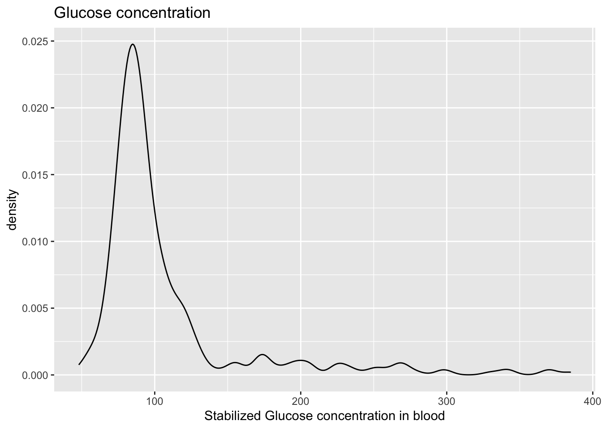
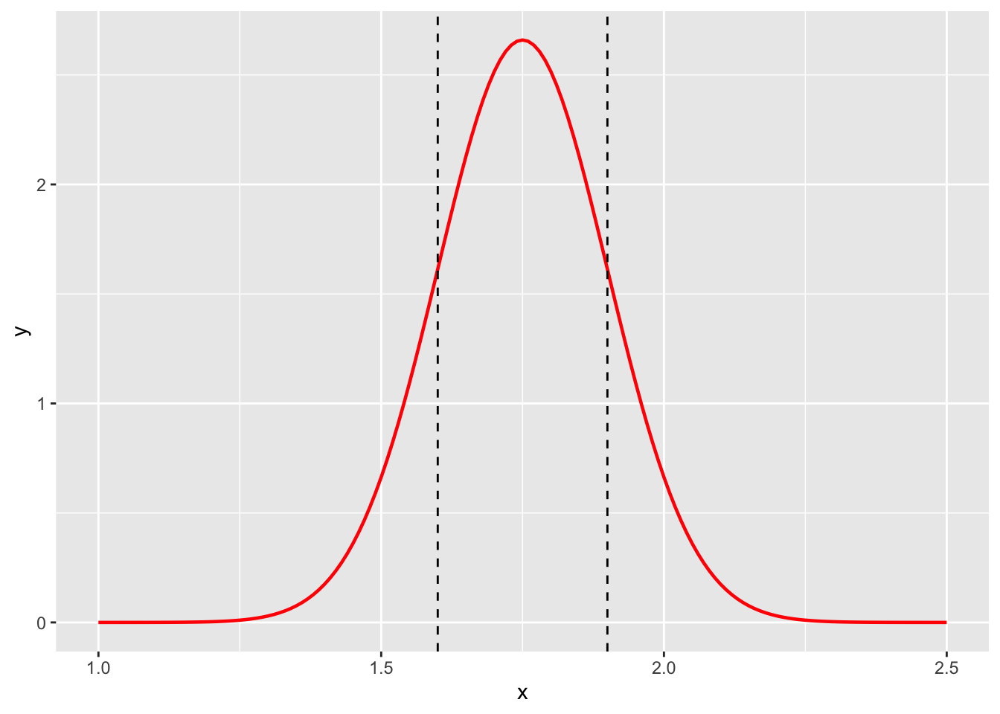
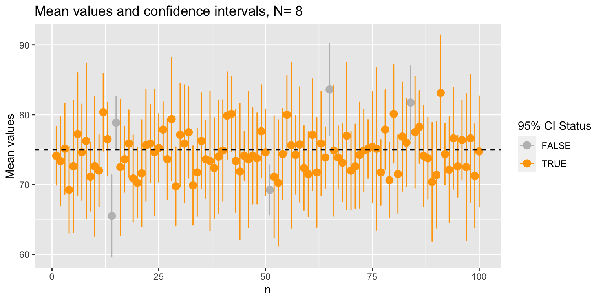

1 WEEK 1
1.1 Day 1: Descriptive statistics and data types
Today, you will learn how to perform basic tasks on a dataframe/tibble, descriptive statistics, perform data cleaning, and plotting.
1.1.1 Data features and where to find them
1.1.1.1 Load the data
The diabetes dataset, which we will be using in this practical class will be downloaded from an online repository. We will load that into R and have a sneak peek into how it looks like with the console. In the following you will see several functions that give us information about our dataset.
dat = as_tibble(read.delim('https://tinyurl.com/y4fark9g')) # Load the dataset
head(dat, 10) # Look at the first 10 lines of the table## # A tibble: 10 × 19
## id chol stab.glu hdl ratio glyhb location age gender height weight
## <int> <int> <int> <int> <dbl> <dbl> <chr> <int> <chr> <int> <int>
## 1 1000 203 82 56 3.60 4.31 Buckingham 46 female 62 121
## 2 1001 165 97 24 6.90 4.44 Buckingham 29 female 64 218
## 3 1002 228 92 37 6.20 4.64 Buckingham 58 female 61 256
## 4 1003 78 93 12 6.5 4.63 Buckingham 67 male 67 119
## 5 1005 249 90 28 8.90 7.72 Buckingham 64 male 68 183
## 6 1008 248 94 69 3.60 4.81 Buckingham 34 male 71 190
## 7 1011 195 92 41 4.80 4.84 Buckingham 30 male 69 191
## 8 1015 227 75 44 5.20 3.94 Buckingham 37 male 59 170
## 9 1016 177 87 49 3.60 4.84 Buckingham 45 male 69 166
## 10 1022 263 89 40 6.60 5.78 Buckingham 55 female 63 202
## # ℹ 8 more variables: frame <chr>, bp.1s <int>, bp.1d <int>, bp.2s <int>,
## # bp.2d <int>, waist <int>, hip <int>, time.ppn <int>1.1.1.2 Dimensions and naming
1. What is the dimension of our dataset (i.e. how many rows/columns are there in our data)
## [1] 403 192. What are the column names of our dataset
## [1] "id" "chol" "stab.glu" "hdl" "ratio" "glyhb"
## [7] "location" "age" "gender" "height" "weight" "frame"
## [13] "bp.1s" "bp.1d" "bp.2s" "bp.2d" "waist" "hip"
## [19] "time.ppn"Probably you are confused about what these column names mean. For more description on these values look here
1.1.1.3 Numerical features
3. How do we extract the minimum and maximum age of patients in our dataset?
Can you find out the same for height and weight?
4. How does the overall summary of our entire dataset look like?
Can you explain what you see after you run the
summary()function?
Feel free to play around with this syntax until you feel comfortable with it.
You can open a window with View(dat) to compare your results.
1.1.2 Data cleaning
Very often the first thing one needs to do before any data science project is to clean up the raw data and transform it into a format that is readily understood and easy to use for all downstream analysis. This process usually involves: –
- Removing empty value rows/columns
- Removing unused or unnecessary rows/columns
- Reordering the data matrix
- Keeping columns uniformly numeric (age, weight etc) or string (names, places etc) or logical (TRUE/FALSE, 1/0)
- Handling strange caveats which are data specific like replacing
,or., or;from numbers etc
Lets do some clean up of our own diabetes data
- We will make the
idcolumn the row names for the dataset; - We will remove the
bp.2sandbp.2dcolumns as it has mostly missing values (see summary above); - We will also remove the column
time.ppnwhich will not be required in our analysis; - We will reorder the columns of the data such that all the qualitative and quantitative values are separated.
To perform this cleanup, we need a couple of important functions, that we will first discuss:
filteris.namutateaccross%in%
1.1.2.1 filter()
filter() is used on a dataset to filter rows satisfying a condition you specify like we saw previously (Introduction).
Let’s look at an example. We are only filtering for senior individuals in our dataset.
We can also filter based on other conditions, like location, sex, among others.
In some cases, we can also use which() to filter values. The syntax is different…
… but it works for vectors and other classes. Let’s see the next example.
# number of animals you have
number = c(2,3,4,5,1,2,5)
# Let's create a different vector (of the same length)
animals = c("cat", "dog", "cow", "parrot", "zebra", "sparrow", "lizard")
# Let's use the "which()" function now
animals[which(number > 2)]## [1] "dog" "cow" "parrot" "lizard"We selected all animals from the “animals” vector that correspond to more than three individuals in the “number” vector.
1.1.2.2 is.na()
is.na() is used to determine if NA values are present in a given object. We can try a simple example with one variable being assigned as NA.
## [1] FALSE## [1] TRUEWe can do this with vectors obtained from dat. What class is the output in?
1.1.2.3 mutate()
mutate() is often used to create a new column based on another column of the dataframe. Let us use this function to mutate two new columns including the weight in kilograms and the height in centimeters. The conversion from pounds to kilograms can be done by multiplying weight in pounds by 0.454. To covert height to centimeters we only need to multiply height (inches) by 2.54.
dat %>%
mutate(weight.kg = weight * 0.454, # you can generate both columns using the same mutate!
height.cm = height * 2.54) %>% # we do not need to save this output
select(id, weight.kg, height.cm)## # A tibble: 403 × 3
## id weight.kg height.cm
## <int> <dbl> <dbl>
## 1 1000 54.9 157.
## 2 1001 99.0 163.
## 3 1002 116. 155.
## 4 1003 54.0 170.
## 5 1005 83.1 173.
## 6 1008 86.3 180.
## 7 1011 86.7 175.
## 8 1015 77.2 150.
## 9 1016 75.4 175.
## 10 1022 91.7 160.
## # ℹ 393 more rows1.1.2.4 accross()
accross() is very often used together with mutate() and another helper function, like everywhere(), starts_with(), ends_with(), or contains().
Later, we will use accross() together with the other functions we learned previously to remove NAs like this:
There is much to unpack here:
+ rowwise() ensures that the next operations are applied by row.
+ mutate() adds a new column called na_count to the dataframe.
+ across(everything()) selects all columns in the current row.
+ sum(is.na(...)) calculates the sum of missing values for each row.
Try to run the previous example without
rowwise(). What does it look like?
1.1.2.5 %in%
This is an operator to check which elements of a first vector are inside a second vector.
## [1] TRUE TRUE1.1.2.6 Ready for the cleaning!
The first column of the dataframe is the column with the name “id”.
The rows are just numbered, without names.
We are going to rename the rows using the column “id”. The function column_to_rownames() allows us to do this efficiently.
Keep in mind that rownames must be unique!
The na_count column will then include the number of NAs per row. Do you understand how it works?
We finally apply filter again to keep only rows with less than or 2 NAs.
dat = dat %>%
rowwise() %>%
mutate(na_count = sum(is.na(across(everything())))) %>%
filter(na_count <= 2)We will also remove the na_count and some problematic columns (bp.2s, bp.2d and time.ppn) by selecting the ones which are not these. We can do this using !, as this character can be used to invert results. Let us try it with select().
Next, we can re-order the remaining columns, in order to put the categorical columns first, and numerical columns after. We can use select to order columns too, but we need to combine it with where() and functions which verify the class of the columns, like is.character() or is.numeric().
Here is a simple example:
# Create a character and numeric
name = c("Antonia")
age = c(23)
# Verify if the previous object are from the character/numeric classes
is.character(name)
is.character(age)
is.numeric(age)And here we can apply the same principle to the re-ordering:
dat <- dat %>%
select(
# Select categorical columns
where(is.character),
# Select numerical columns
where(is.numeric)
)
# OR you can use the indexes too, but if you more than 10-20 columns, that is not ideal
# dat = dat[,c(8,6,11,9,10,14,15,2,5,1,3,4,12,13)]Now lets look at our cleaned data:
## location gender frame chol
## Length:377 Length:377 Length:377 Min. : 78.0
## Class :character Class :character Class :character 1st Qu.:179.0
## Mode :character Mode :character Mode :character Median :204.0
## Mean :208.2
## 3rd Qu.:230.0
## Max. :443.0
##
## stab.glu hdl ratio glyhb
## Min. : 48.0 Min. : 12.00 Min. : 1.500 Min. : 2.680
## 1st Qu.: 81.0 1st Qu.: 38.00 1st Qu.: 3.200 1st Qu.: 4.390
## Median : 90.0 Median : 46.00 Median : 4.200 Median : 4.860
## Mean :107.3 Mean : 50.36 Mean : 4.538 Mean : 5.594
## 3rd Qu.:108.0 3rd Qu.: 59.00 3rd Qu.: 5.400 3rd Qu.: 5.622
## Max. :385.0 Max. :120.00 Max. :19.300 Max. :16.110
## NA's :3
## age height weight bp.1s
## Min. :19.0 Min. :52.00 Min. : 99.0 Min. : 90.0
## 1st Qu.:34.0 1st Qu.:63.00 1st Qu.:151.0 1st Qu.:122.0
## Median :45.0 Median :66.00 Median :174.0 Median :136.0
## Mean :46.9 Mean :66.02 Mean :178.1 Mean :137.4
## 3rd Qu.:60.0 3rd Qu.:69.00 3rd Qu.:200.0 3rd Qu.:148.0
## Max. :92.0 Max. :76.00 Max. :325.0 Max. :250.0
##
## bp.1d waist hip
## Min. : 48.00 Min. :26.00 Min. :30.00
## 1st Qu.: 75.00 1st Qu.:33.00 1st Qu.:39.00
## Median : 82.00 Median :37.00 Median :42.00
## Mean : 83.69 Mean :37.95 Mean :43.08
## 3rd Qu.: 92.00 3rd Qu.:41.25 3rd Qu.:46.00
## Max. :124.00 Max. :56.00 Max. :64.00
## NA's :1 NA's :1The ordering and selection of columns looks right, however it seems that there are certain rows that have missing values still (like glyhb column has 3 NA values still).
Lets remove all rows with any missing value using na.omit().
Remember, 1 row = 1 patient.
How many patients were removed because they were associated with missing values?
Now our cleaned data has no missing values, columns are cleanly ordered and each column is in the right format
## location gender frame chol
## Length:367 Length:367 Length:367 Min. : 78.0
## Class :character Class :character Class :character 1st Qu.:179.0
## Mode :character Mode :character Mode :character Median :204.0
## Mean :207.5
## 3rd Qu.:229.0
## Max. :443.0
## stab.glu hdl ratio glyhb
## Min. : 48.0 Min. : 12.00 Min. : 1.500 Min. : 2.680
## 1st Qu.: 81.0 1st Qu.: 38.00 1st Qu.: 3.200 1st Qu.: 4.390
## Median : 90.0 Median : 46.00 Median : 4.200 Median : 4.860
## Mean :107.3 Mean : 50.28 Mean : 4.536 Mean : 5.602
## 3rd Qu.:108.0 3rd Qu.: 59.00 3rd Qu.: 5.400 3rd Qu.: 5.630
## Max. :385.0 Max. :120.00 Max. :19.300 Max. :16.110
## age height weight bp.1s
## Min. :19.00 Min. :52.00 Min. : 99.0 Min. : 90.0
## 1st Qu.:34.00 1st Qu.:63.00 1st Qu.:151.0 1st Qu.:121.5
## Median :45.00 Median :66.00 Median :174.0 Median :136.0
## Mean :46.68 Mean :66.05 Mean :178.1 Mean :137.1
## 3rd Qu.:60.00 3rd Qu.:69.00 3rd Qu.:200.0 3rd Qu.:148.0
## Max. :92.00 Max. :76.00 Max. :325.0 Max. :250.0
## bp.1d waist hip
## Min. : 48.0 Min. :26.00 Min. :30.00
## 1st Qu.: 75.0 1st Qu.:33.00 1st Qu.:39.00
## Median : 82.0 Median :37.00 Median :42.00
## Mean : 83.4 Mean :37.93 Mean :43.04
## 3rd Qu.: 92.0 3rd Qu.:41.50 3rd Qu.:46.00
## Max. :124.0 Max. :56.00 Max. :64.00Can you identify which types of data (continuous, discrete etc) each column above represents and why?
1.1.3 Visualizing data distribution
In this section you will also learn the essential functions to plot data in an intuitive and useful way using the ggplot2 package, just like in the introductory section to tidyverse.
1.1.3.1 Histograms
We can plot the column “stab.glu” as a histogram using the hist() function:
ggplot(dat,
aes(x = stab.glu)) +
geom_histogram() +
labs(x = "Stabilized Glucose concentration in blood", # add labels to the x-axis
title = "Glucose concentration") # add title
Add the parameter
bins = 50in the above lines of code (insidegeom_histogram) and see what happens. Try different values forbinslike10, 20, 75, 100. Can you interpret the differences? Is this a good or bad thing about histograms?
1.1.3.2 Density plots
For density plots, we use the geom_density() function to estimate the probability density function for a given variable.
ggplot(dat,
aes(x = stab.glu)) +
geom_density() +
labs(x = "Stabilized Glucose concentration in blood", # add labels to the x-axis
title = "Glucose concentration") # add title
1.1.3.3 Boxplots
The boxplot() function produces a boxplot for a given variable:
ggplot(dat,
aes(x = stab.glu)) +
geom_boxplot() +
labs(x ="Stabilized Glucose concentration in blood")
Can you explain all features of this graph, such as upper/lower whisker, 25% quantile, …?
1.1.3.4 QQ-plots
We can use QQ-plots to either (1) compare two distributions, or (2) compare a distribution with a theoretical distribution (typically the normal distribution).
We can for example compare the distribution of the blood pressure values to check if they are normally distributed

Now we can use the function geom_qq() to generate the QQ-plot of this distribution against the standard normal distribution:
ggplot(dat,
aes(sample = bp.1s)) + # we use sample= inside aes for the QQ-plot
geom_qq() # creates the QQ-plot
Using the additional command geom_qq_line(), we can add a straight line that goes through the first and third quartile:
ggplot(dat,
aes(sample = bp.1s)) + # we use sample= inside aes for the QQ-plot
geom_qq() +
geom_qq_line(colour = 'red') # adds in the QQ-line on top
So, is the distribution normal??
Now let’s compare the quantiles of the cholesterol values by biological sex.
Notes on ggplot() here: Rather than ggplot(dataset, aes(...)) we use ggplot() + geom_xx(aes(...)) for situations where the data we wish to plot is not in a dataframe.
# We can use "filter()" to filter the cholesterol values for men and women
dat.male = dat %>%
filter(gender == 'male')
dat.female = dat %>%
filter(gender == 'female')
# Compute the quantiles (note the "na.rm" option to ignore missing NA values!)
q.male = quantile(dat.male$bp.1s,
probs=seq(0,1,by=0.05),
na.rm=TRUE)
q.female = quantile(dat.female$bp.1s,
probs=seq(0,1,by=0.05),
na.rm=TRUE)
# Now plot against each other!
ggplot() +
geom_point(aes(x = q.male, y = q.female)) +
labs(title = "Quantiles", x = "Male quantiles", y = "Female quantiles")
1.1.4 Correlation
1.1.4.1 Measuring the centrality in data
Before you begin, think back to the mean, median and quantiles we saw on the boxplot. Do you remember what these terms mean? How does an asymmetrical distribution influence mean and median?
We have already seen that the summary() and quantile() functions in R can compute the mean, median and quantiles of any given data.
Calculate the mean and median of other continuous numeric data in the diabetes dataset and measure the difference between them. (a) Why is there a difference between the mean and median? (b) Why do you think there are larger differences for some and almost no difference for others?
1.1.4.2 Association between variables
Often a common step during any data analysis project is to find associations between variables present in the dataset. Such associations helps us to decipher the underlying structure in the data.
For instance, in our diabetes dataset we would expect a high correlation between free blood glucose levels and glycosylated blood levels or between waist and hip sizes. One of the most common ways of measuring associations is correlations.
Let us start by producing a scatter plot between a pair of variables:
ggplot(dat,
aes(x = stab.glu, y = glyhb)) +
geom_point() +
labs(x='Stabilized glucose', y='Glycosylated hemoglobin')
Do you suspect that the two variables have a relationship? Do the scatter plot for other pairs of numerical variables!
We now can compute the correlation of the two variables. We can compute the Pearson correlation or the Spearman correlation:
## [1] 0.7411355## [1] 0.5214866The Spearman correlation seems much lower, right? To understand why, we can do a scatter plot between the ranks of the two variables:
ggplot(dat,
aes(x = rank(stab.glu), y = rank(glyhb))) +
geom_point() +
labs(x='Rank - Stabilized glucose', y='Rank - Glycosylated hemoglobin')
Do you understand the usage of ranks here? Run `rank()`` on a vector like c(3,5,10,1,23) to see how the output looks like.
Associations are among the simplest forms of structure in the data! It is important to remember that Association does not imply correlation and Correlation does not imply causation. Take a look at this page to view few common logical fallacies. see here
1.1.5 EXERCISES
1.1.5.1 Exercise 1: Data features
Try to obtain the same result of the
head()function by using slicing on the dataset “dat” using row indexes.Print out the first three column names of “dat” using
colnames().Print out the last element in the last column of “dat” using the
dim()function instead of using numerals.Write a code to calculate the mean of 3 numerical columns of “dat” (you can choose which ones) without using the
mean()function and make a new column.Add one line of code that prints out the results from exercise 1 that are greater than 10 by using the
which()function
1.1.5.2 Exercise 2: Visualization
Visualize the cholesterol levels of all patients with a histogram using the
geom_histogram()function.Visualize the cholesterol levels of all male patients with a histogram using
geom_histogram(). (expert): Mark the median, first and third quartile with vertical lines usinggeom_vline(). The values are defined usingxintercept(as in which value of x should the vertical line intercept). Then mark median, first and third quartile for female patients in the same graph with a different color. What can you tell from the differences in these values?
1.1.5.3 Exercise 3: Correlation
Is there an association between “hip” and “waist” on the data frame “dat”? Use the
geom_point()function to do a scatter plot of the values and of the ranks (as determined by therank()function). Compute both the Pearson and Spearman correlation values.Select only the numerical columns (using
select(where(is.numeric))), and apply the functioncor()directly:%>% cor(). What happens? What is the output? Store the result of this command in a new variable named “all.cor”. Plot a heatmap of these results using thepheatmap()function from the “pheatmap” package. Remember that you first have to install and then activate this package usinglibrary("pheatmap").Find the highest and lowest Pearson correlation value of the result from exercise 2.2. To which pair of variables do they correspond? Plot the corresponding scatter plots using
geom_point()! Hint: Before finding the highest Pearson correlation value, use thediag()function to set all diagonal values (=1) of “all.cor” to NA.
1.2 Day 2: Dimensionality reduction and unsupervised learning
1.2.1 Preparing the data
Unsupervised clustering is one of the most basic data analysis techniques. It allows to identify groups (or clusters) or observations (here: patients) or variables. Unsupervised means that you are not using any prior knowledge about groups of variables or associations. K-means clustering is a good example of unsupervised learning because the method categorizes sample based uniquely on the data.
In this part, we will use a dataset of gene expression data from the TCGA (The Cancer Genome Atlas) project. This project has sequenced several thousand samples from cancer patients of more than 30 cancer types. We will use a subset of this data, containing 200 samples (=patients, as columns) , for which the expression of 300 genes (= rows) has been measured.
1.2.1.1 Load data
We will start by reading the gene expression data. The columns are the samples and the rows are the genes. This is matrix, which allows some numerical operations to be conducted directly.
brca.exp = readRDS(url('https://www.dropbox.com/s/qububmfvtv443mq/brca.exp.rds?dl=1'))
dim(brca.exp)## [1] 100 200WARNING: If you have problem loading the data, please download this file, store it on your disk, and open it with the following command:
#brca.exp = readRDS("xxxx") # xxxx should be replaced with the path to the downloaded file in your deviceNext we will load the clinical annotation file for this gene expression data and explore it
brca.anno = readRDS(url('https://www.dropbox.com/s/9xlivejqkj77llc/brca.anno.rds?dl=1'))
head(brca.anno)## Age ER_status HER2_status Classification
## TCGA-BH-A1EO-01 68 Positive Negative Luminal A
## TCGA-E2-A14N-01 37 Negative Negative Basal-like
## TCGA-AN-A0FF-01 32 Positive Negative Luminal B
## TCGA-A2-A04V-01 39 Positive Negative Luminal A
## TCGA-AN-A0XP-01 69 Positive Negative Luminal A
## TCGA-C8-A12U-01 46 Positive Negative Luminal BSame here: if you have issues running the previous readRDS command, download this file, save it on your disk and load it with
You can check the number of samples for each tumor type using the table() function, applied to a specific column (here, there is only one column…)
##
## Equivocal Negative Positive
## 4 174 221.2.1.2 Data transformation
You will see that the distribution of the data is extremely squeezed due to outliers with very high or low values. We will need to make the data more homogeneous, so that our downstream analysis is not affected by these very large magnitude numbers.
We will carry out the following data processing steps. Some of these steps use rather arbitrary values, which come from visually inspecting the data!
Thresholding: cap the values to the 95th percentile
Homogenization: base-2 logarithmic transformation of the entire dataset
Scaling: standardize the data so that across genes the mean = 0 and variance = 1.
Before we start modifying the data, we will store the original data frame into a variable, so that in case of problems we can revert back to the initial data!!
Thresholding
## what is the value of the 95th percent percentile?
q95 = quantile(brca.exp,probs=0.95)
## set all values above to this value
brca.exp[brca.exp>q95] = q95Homogenization and Scaling
We will perform this step by log-transforming the data. We are able to use this operation because the data is still in a matrix.
Why do we add +1 ?
Next, we will scale the data and plot its distribution. To do this efficient, we need to convert the data to tibble first, make it tidy, and then plot.
Conversion to tibble can be done using as_tibble(brca.exp, rownames = NA), where rownames = NA is meant to keep the original rownames (in this case, gene names) in the new tibble, although they are invisible.
Check this out:
## [1] "TFF1" "C4orf7" "AGR3" "GABRP" "C1orf64"In addition, gather(key = "sample", value = "expression") converts the tibble to a long format, where “sample” represents the original column names, and “expression” represents the values present in the initial matrix.
## scaling
brca.exp = scale(brca.exp)
## plotting the density
as_tibble(brca.exp, rownames = NA) %>%
gather(key = "sample",
value = "expression") %>%
ggplot(aes(x = expression)) +
geom_histogram() +
labs(title = "Transformed data")
Compare to the density plot before these pre-processing steps using the same strategy.
as_tibble(brca.exp.original, rownames = NA) %>%
gather(key = "sample", value = "expression") %>%
ggplot(aes(x = expression)) +
geom_histogram() +
labs(title = "Untransformed data")
1.2.2 k-means clustering
Another widely used method for grouping observations is the k-means clustering. Now we will cluster our dataset using k-means and explore the underlying structure of the data. In this dataset, different clusters could represent different batches, different tumour subtypes, among other features.
1.2.2.1 Performing k-means
We use the function kmeans() in R on our matrix. You can check the options and usage in the help panel on the right. The parameter centers indicates how many clusters are requested.
Just type
kmin your console and check all results generated. Play around with thecentersparameter. See cluster assignments by typingtable(km$cluster)
1.2.2.2 Quality of the clustering
We can judge the quality of the clustering by computing the intra-cluster distances, i.e. the sum (squared) of all distances between pairs of objects belonging to the same cluster. This is called the within sum of squares (WSS). The better the clustering, the smaller WSS should be. However, it also automatically decreases with increasing k.
What would be WSS if we request a number of clusters equal to the number of data points? You can check what the WSS is for a particular clustering by typing
## [1] 4123.459run k-means for k=2 to k=7 clusters, and for each k check the WSS value. How does WSS evolve with increasing k?
We can also run a little loop to test different k. Loops are very important structures in any programming language. We can test a simple scenario before. Check how the output of this simple loop looks like.
## [1] 1
## [1] 2
## [1] 3
## [1] 4
## [1] 5
## [1] 6## [1] 2
## [1] 3
## [1] 4
## [1] 5
## [1] 6
## [1] 7Do you understand the difference between the 2 previous for loops? Try to make your own for loop.
Now we can make one to test k from 2 to 7:
km_wws = numeric() # we start by creating an empty vector
# To write in the position 1, we use i
# to find the 1st element, we use k_to_test[i]
for (i in 1:length(k_to_test)) {
km_wws[i] = kmeans(x=t(brca.exp),
centers = k_to_test[i])$tot.withinss
}
# We can plot the k against WSS using geom_line
ggplot() +
geom_line(aes(x = k_to_test, y = km_wws)) +
labs(x="Number of clusters K",
y="Total within-clusters sum of squares")
Do you see an obvious “elbow” or “kink” in the curve?? Another criteria for the quality of the clustering is the silhouette method.
To run the silhouette method, we need to compute the pairwise distances between all objects (i.e. patients) in the data matrix. This is done with the dist function, which can take different metrics (euclidean, …)
## compute the patient-patient distance matrix (this is why we transpose using the `t()` function)
D = dist(t(brca.exp))We now compute the silhouette for a specific k-means clustering:
## Warning: package 'cluster' was built under R version 4.3.1##
## Attaching package: 'cluster'## The following object is masked _by_ '.GlobalEnv':
##
## animalskm = kmeans(x=t(brca.exp), centers = 3, nstart = 10)
s = silhouette(km$cluster,D)
# Let us use the basic R function plot() to see the results
plot(s)
1.2.3 Hierarchical clustering
Clustering is a method by which we group together similar observations while separating out the dissimilar ones. We will cluster our samples from the cancer dataset to see which samples cluster together or separately. Hierarchical clustering does not generate discrete clusters of datapoints, but rather creates a dendrogram that indicates the magnitude of similitude between samples. Once again is up to the Data Scientist to decide the right amount of clusters.
1.2.3.1 Determine the most variable genes
When performing clustering, we usually reduce the number of genes used, as some of them are not informative. For example, genes that show a mostly constant expression across all samples will not be useful to distinguish the samples, right? One simple method is to select genes that show a high variance across all samples.
brca.exp.tibble = as_tibble(brca.exp, rownames=NA) %>%
rownames_to_column("gene")
## create a new column with the variance for all genes across all samples
brca.exp.var = brca.exp.tibble %>%
rowwise() %>%
mutate(variance = var(c_across(starts_with("TCGA"))))
# only includes the columns starting with TCGAWe now want to find the top 25% with the highest variance
## what is the 75% quantile of the variance?
q75 = quantile(brca.exp.var$variance, probs = 0.75)
q75## 75%
## 0.4934196So let us select all rows (genes) with a variance higher than or equal to q75:
## only select the genes with a variance in the top 25%
topVariantGenes <- brca.exp.var %>%
filter(variance >= q75)
print(topVariantGenes$gene)## [1] "TFF1" "C4orf7" "AGR3" "GABRP" "C1orf64" "TFF3"
## [7] "ABCC11" "PGR" "FABP7" "SERPINA11" "VGLL1" "A2ML1"
## [13] "ELF5" "PROM1" "CYP4Z2P" "SLC6A14" "CAPN8" "ABCC8"
## [19] "SYTL5" "SFRP1" "ART3" "GABBR2" "PPP1R14C" "HORMAD1"
## [25] "LOC84740"1.2.3.2 Computing the correlation between all patients
Let us start by filtering for only the highly variable genes. Then we can directly calculate Spearman correlation.
brca.exp.highvar.cor = brca.exp.tibble %>%
filter(gene %in% topVariantGenes$gene) %>% # from the whole list, select only high variable
select(where(is.numeric)) %>% # get only numerical columns
cor(method="spearman") # create correlation-based distance matrixIf we want to display the correlation matrix as a heatmap, we can use the pheatmap function as before:

Each cell of this heatmap represents the correlation value between the sample in the row and the sample in the column. The correlation of a sample to itself is always 1 (red diagonal).
The function automatically determines the clustering trees of the rows and columns (which are identical, since the correlation matrix is symmetrical!)
1.2.3.3 Including clinical annotations in the heatmap
This is a nice representation, but in order to interpret this clustering, we need to add some additional (clinical) information to interpret the clustering structure. To do this, we use an annotation data frame containing as columns a number of clinical features.
The clinical annotation is stored in the brca.anno data frame.
We can now plot again the heatmap, using the annotation dataframe to add additional information
pheatmap(brca.exp.highvar.cor,
annotation_row = brca.anno,
show_rownames = FALSE,
show_colnames = FALSE)
How would you interpret this dendrogram? Do the clusters you observe make any sense? What are the parameters by which the samples cluster together? How many meaningful clusters can you observe? Do you see any relation between the distribution of the data and your clusters ?
The function
pheatmapaccepts a parameter clustering_method to indicate alternative linkage methods; try other linkage methods (check which are available with the pheatmap help page, which can be accessed by typing?pheatmapin the console!)
1.2.4 Principal component analysis
We will now use principal component analysis to explore the same dataset, and identify directions (i.e. principal components) with maximal variance. Principal components analysis finds n-dimensional vectors (Principal Components) in the direction of the largest variance, thereby allowing you to describe an n-dimensional dataset with just a few dimensions.
pca = topVariantGenes %>%
select(where(is.numeric)) %>%
t() %>% # do not forget to transpose the data!
prcomp(center = FALSE, scale = FALSE) # We set these as false as we have already scaled our data
summary(pca)## Importance of components:
## PC1 PC2 PC3 PC4 PC5 PC6 PC7
## Standard deviation 3.719 2.1886 0.89796 0.86195 0.69326 0.62793 0.61645
## Proportion of Variance 0.559 0.1936 0.03259 0.03003 0.01942 0.01593 0.01536
## Cumulative Proportion 0.559 0.7526 0.78514 0.81516 0.83458 0.85052 0.86588
## PC8 PC9 PC10 PC11 PC12 PC13 PC14
## Standard deviation 0.59717 0.55556 0.53665 0.52007 0.50060 0.4900 0.45974
## Proportion of Variance 0.01441 0.01247 0.01164 0.01093 0.01013 0.0097 0.00854
## Cumulative Proportion 0.88029 0.89276 0.90440 0.91533 0.92546 0.9352 0.94370
## PC15 PC16 PC17 PC18 PC19 PC20 PC21
## Standard deviation 0.44696 0.43284 0.4009 0.39542 0.38101 0.35781 0.34271
## Proportion of Variance 0.00807 0.00757 0.0065 0.00632 0.00587 0.00517 0.00475
## Cumulative Proportion 0.95178 0.95935 0.9658 0.97216 0.97803 0.98320 0.98795
## PC22 PC23 PC24 PC25
## Standard deviation 0.30347 0.28452 0.26505 0.23424
## Proportion of Variance 0.00372 0.00327 0.00284 0.00222
## Cumulative Proportion 0.99167 0.99494 0.99778 1.00000How many principal components do you obtain? Compare this to the dimension of the matrix using the
dim()function!
What would happen if you would not transpose the matrix with t(…) in the prcomp function?
Principal components are ranked by the amount of variance that they explain. This can be visualized using a scree plot, indicating how much variance each PC explains: the standard deviation explained by each principal component is contained in the pca$sdev vector:
## [1] 3.7190077 2.1886234 0.8979609 0.8619466 0.6932587 0.6279258 0.6164472
## [8] 0.5971745 0.5555603 0.5366514 0.5200662 0.5006037 0.4899632 0.4597383
## [15] 0.4469622 0.4328397 0.4008966 0.3954205 0.3810141 0.3578084 0.3427089
## [22] 0.3034732 0.2845180 0.2650462 0.2342352We see that the standard deviation is indeed going down! Let us now plot the proportion of total variance explained by each PC
variance = (pca$sdev)^2
prop.variance = variance/sum(variance)
names(prop.variance) = 1:length(prop.variance)
# We make a data.frame from the prop.variance and the PC it corresponds to
# we can obtain the PCs using names()
data.frame(proportion = prop.variance,
PCs = as.numeric(names(prop.variance))) %>%
ggplot(aes(x = PCs, y = proportion)) +
geom_col() + # to make the barplot
labs(y='Proportion of variance') # we only plot the first 20 PCs
Principal component analysis represents each data point (here: patient) in a new space in which the coordinates are principal components. Check the following output:
We can now display the data points (i.e. patients) in the first two principal components. In addition, we can color the dots according to certain clinical parameters:
# We start by creating a dataframe and combining it with the annotation
pca_with_annot = as.data.frame(pca$x) %>%
merge(brca.anno, by = 0) # by = 0 makes use of the rownames as common information
## Now the object is in a ggplot2 friendly format
ggplot(pca_with_annot,
aes(x = PC1, y = PC2, colour = ER_status)) +
geom_point() +
scale_colour_manual(values = c("grey", "red", "navy")) # scale_colour_manual can be used to change colours
Choose different PCs for this plot. Can you still observe the two clusters corresponding to the ER_status of the patients?
1.2.5 EXERCISES
1.2.5.1 Exercise 1: Variance
For this exercise set it is given that all the data cleanup steps have been taken, you don’t need to put them in the results.
Make a heatmap of the reduced matrix “topVariantGenes” using the
pheatmap()function of thepheatmaplibrary (do not forget to select only for numerical columns). Check for parameters that might change the style of the heatmap (column names, row names, etc..). How is this heatmap different from the heatmap in section 2?Repeat the selection of top variable genes (apply the same quantile used to generate “topVariantGenes”), but using the median absolute deviation (or MAD) using the
mad()function instead of thesd()function, and store into asbrca.topMADExtract the gene names of
topVariantGenesandbrca.topMADand check how many overlap using theintersect()function.
1.2.5.2 Exercise 2: Hierarchical clustering
In section 2, we have computed a correlation matrix, and used this matrix to build a clustering tree.
Try different linkage methods using the clustering_method parameter to see if the topology of the dendrogram changes!
- Try building a distance matrix which would lead to different topologies of the dendrogram, depending on which linkage method is used! Show the dendrograms built with different linkage methods!
1.2.5.3 Exercise 3: PCA
Display the patients in the first two principal components (available in
pca_with_annot) usinggeom_point(). Color the patients in the PCA plot according toHER2_status.Color the patients in the PCA plot according to
Classification; you will probably need to define some more colors… You can check available colors here
1.2.5.4 Going further (expert)
Instead of performing the k-means on the whole gene expression matrix, we can run k-means on the space in which each patient is represented by the first k principal components.
Run k-means with different numbers of clusters (1-10) on the patients using the first 2, 4, 6,… principal components (i.e. the first columns of
pca_with_annot). Use the elbow method to evaluate how the within sum of squares (WSS) evolves. What is the optimal number of clusters?Represent the patients in the PCA plot as previously, but color them according to the cluster they belong to! Run kmeans with two clusters for this and merge the k-means results.
1.3 Day 3: Probability distributions
1.3.1 Probability distributions
In the previous Exercise Sheet we have learnt more about unsupervised learning, like hierarchical clustering and especially PCA. These are among the fundamental methods of Data Analysis. Today we will learn more about another milestone of statistics: probability distributions.

Distributions represented by sparse lines represent outcomes which will be discrete (for example the roll of dice will always have discrete integer values from 1 to 6). Distributions represented by dense lines represent outcomes which can be continuous i.e real numbers (for example the height of people living in Heidelberg).
R has in-built functions for almost all probability distributions
All of these functions for probability distributions follow the same common scheme, the root name of the function prefixed by either of p, d, q and r. For example for the Normal distribution we have the four variants of function available - pnorm, dnorm, qnorm and rnorm.
Here, you can find some specific help on these functions:
In the respective help documentation, you will find details on each of the functions.
Probably, the most difficult to distinguish or to remember are pnorm() and qnorm() (respectively ppois() and qpois(), etc …).
We are going to look at them more deeply in the following.
1.3.1.1 Getting to know the various functions
Let us get a grasp of what these functions actually do. You should be familiar with the cumulative distribution function, let’s take a look at that and its inverse first. We will work with a Normal distribution. We calculate the cumulative probability for the values 1,2,3,4 in three different distributions, using one of the functions described previously.
Short hint: p like cumulative P-robability. Which function are you going to use?
## [1] 0.1586553 0.5000000 0.8413447 0.9772499## [1] 0.3085375 0.5000000 0.6914625 0.8413447## [1] 0.001349898 0.022750132 0.158655254 0.500000000Do you understand why the cumulative distribution functions change the way they do?
Now, on the same distributions, we calculate the inverse cdf (inverse cumulative distribution function) for the cumulative probabilities of 25%, 50% and 75%. We use the qnorm() function for this (q- like quantile):
## [1] 1.32551 2.00000 2.67449## [1] 0.6510205 2.0000000 3.3489795## [1] 3.32551 4.00000 4.67449Try with 100% on any of the distributions. Can you explain this result? Do you expect the result to be different in the other ones?
Now that you know the output of the p- and q- functions, let’s look at d- like density probability functions. For any continuous distribution, the value of the function at any specific value is 0. This is why this probability function is used in discrete distribution such as the binomial distribution (function dbinom()). We first calculate the probability of getting 5 events out of 5 in a binomial distribution with a probability of 0.5. Then, we calculate the odds of not getting 5 out of 5.
## [1] 0.03125# size = number of trials; prob = probability of success on each trial
# probability of NOT getting 5 out of 5
1-dbinom(5, size=5, prob=0.5)## [1] 0.96875## [1] 0.96875What is the probability of getting 5 out of 10? And NOT getting 5 out of 10?
Suppose that the distribution of body height is described by a normal distribution with mean = 1.75 m and standard deviation sd = 0.15. What is the probability that someone is taller than 1.9 m? We can use the parameter lower.tail of the function pnorm() for this.
What is the probability that someone is smaller than 1.60m?
## [1] 0.1586553## [1] 0.1586553## [1] 0.1586553## [1] 0.1586553# because: per defaults, lower.tail is set to TRUE (you can check the help page for further information using `?pnorm`)Let’s have a look at this distribution using the dnorm() function:
x = seq(1, 2.5, by=0.01)
y = dnorm(x, mean=1.75, sd=0.15)
ggplot() +
geom_line(aes(x = x, y = y),
colour = "red", linewidth = 0.8) +
geom_vline(xintercept = c(1.6, 1.9),
linetype = 'dashed')
Let’s finally look at r- like random functions. These, unlike the others, don’t return single probabilities or values but rather generate a random distribution of values. We can use this to generate a normal distribution with mean = 10, sd = 5.
## normal distribution
x = rnorm(n=1000,mean=10,sd=5)
ggplot() +
geom_histogram(aes(x=x), bins = 20,
fill = "orange") +
labs(y = "Frequency") 
Can you generate a Poisson distribution and a binomial distribution?
1.3.1.2 Normal/Gaussian distribution
The normal or the Gaussian distribution is given as:
\[P(x) = \frac{1}{{\sigma \sqrt {2\pi } }} \cdot e ^ \frac{-(x- \mu)^2}{{2\sigma ^2 }} \] where \(\mu\) is the mean of the distribution and \(\sigma\) is the standard deviation.
The standard normal distribution is a special case of normal distribution where the values for \(\mu = 0\) and \(\sigma = 1\). Thus, the above equation for the Normal distribution simplifies to:
\[P(x) = \frac{1}{{\sqrt {2\pi } }} \cdot e ^ \frac{-x^2}{2} \] Now for any \(x\) we can easily solve this equation since \(\pi\) and \(e\) are known constants.
1.3.1.3 Visualization
Let’s generate three random normal distributions with different means and standard deviations and visualize them together
## Use the function `dnorm()` to plot the density distribution
x = seq(-10, 30, by=.1)
d1 = dnorm(x, mean=0, sd=1)
d2 = dnorm(x, mean=10, sd=1)
d3 = dnorm(x, mean=20, sd=1)
# Compare with the histogram build from 1000 random number drawn from the standard normal distribution
r1 = rnorm(n=1000, mean=0, sd =1) # random distributions of values
r2 = rnorm(n=1000, mean=10, sd=1)
r3 = rnorm(n=1000, mean=20, sd=1)
# Histogram visualization
# We will start by converting the rnorm outputs into one single df
data.frame(vals = c(r1, r2, r3), # column vals is actual numbers
Specs = c(rep("mean=0, sd=1", 1000), # column Specs is mean/sd
rep("mean=10, sd=1", 1000),
rep("mean=20, sd=1", 1000))
) %>%
ggplot(aes(x = vals,
colour = Specs)) +
geom_histogram(bins = 50) +
geom_freqpoly(bins = 50) # geom_freqpoly adds in the line on top of the histogram
Play with the mean and sd parameters and visualize the distributions (plain lines) as well as the corresponding histograms.
1.3.1.4 Application on a real dataset
Now we will use the Normal distribution to make predictions about gene expression of TP53 in lung cancer. TP53 is the most commonly mutated gene across multiple cancer types especially in lung cancers. We will read a table (import) containing measurements of TP53 expression levels in 586 patients.
tp53.exp = read.table("https://www.dropbox.com/s/rwopdr8ycmdg8bd/TP53_expression_LungAdeno.txt?dl=1",
header=T, sep="\t")[,1:2]
summary(tp53.exp)## Samples TP53_expression
## Length:586 Min. : 92.6
## Class :character 1st Qu.: 911.8
## Mode :character Median :1313.3
## Mean :1380.8
## 3rd Qu.:1778.1
## Max. :4703.9
## NA's :691.3.1.4.1 Data cleaning and central values
We will remove all the missing values and calculate the mean and standard deviation for the TP53 gene expression.
tp53.exp = tp53.exp %>%
na.omit()
m.tp53 = mean(tp53.exp$TP53_expression) # mean
s.tp53 = sd(tp53.exp$TP53_expression) # standard deviation
m.tp53;s.tp53## [1] 1380.822## [1] 719.59341.3.1.4.2 Modeling using a normal distribution
Let’s see how well a normal distribution with \(\mu = 1380.822\) (m.tp53) and \(\sigma = 719.5934\) (s.tp53) can approximate the real distribution of TP53 expression.
We assume that the population mean and standard deviation is similar as calculated above since we cannot measure the expression of TP53 in each and every lung cancer patient in the world.
# distribution of the measured data
ggplot(tp53.exp,
aes(x = TP53_expression)) +
geom_density() +
xlim(-1500, 6000)
Make a normal distribution with the above parameters
x = seq(0,5000,by=5)
d.pred = dnorm(x, mean = m.tp53, sd = s.tp53)
# Now plot both, predicted and measured data
ggplot() +
geom_density(aes(x = tp53.exp$TP53_expression)) +
geom_line(aes(x = x,
y = d.pred),
colour = "red") +
geom_vline(xintercept = c(quantile(tp53.exp$TP53_expression, probs = c(0.1, 0.9)))) +
geom_vline(xintercept = c(qnorm(p = 0.1, mean = m.tp53, sd = s.tp53),
qnorm(p = 0.9, mean = m.tp53, sd = s.tp53)),
colour = 'red', linetype = 'dotted') 
1.3.1.4.3 Data prediction using the normal distribution model
Using a normal distribution with \(\mu = 1380.822\) (m.tp53) and \(\sigma = 719.5934\) (s.tp53), we will ask the following questions -
– (Q1) What is the probability of observing the expression of TP53 to be less than 1000?
– (Q2) What is the probability of observing the expression of TP53 to be greater than 1000?
## [1] 0.2983271## [1] 0.7016729# is same as
pnorm(q=1000, mean =m.tp53, sd = s.tp53, lower.tail = FALSE) # or pnorm(q=1000, mean =m.tp53, sd = s.tp53, lower.tail = F)## [1] 0.70167291.3.1.4.4 Evaluating the quality of the predictions
Let’s check how good these predictions are compared to real data.
# Q1: What is the probability of observing the expression of TP53 to be **less** than 1000?
sum(tp53.exp$TP53_expression < 1000)/nrow(tp53.exp)## [1] 0.2978723# Q2: What is the probability of observing the expression of TP53 to be **greater** than 1000?
sum(tp53.exp$TP53_expression > 1000)/nrow(tp53.exp)## [1] 0.7021277I would say those predictions are pretty good !! Now, let’s try to break this model. Re-execute the code above with different \(q\) values
q=100, q=500, q=4000, q=4500etc. At what values do you think the model would not perform well. HINT: Look at the tails of the distribution!
# What is the probability of observing the expression of TP53 to be less than q?
q = c(100,500,1000,4000,4500)
# The function sapply() is used to calculate and store the predicted (a) and real (b) values
pred = numeric()
meas = numeric()
for (i in 1:length(q)){
pred[i] = pnorm(q=q[i], mean = m.tp53, sd = s.tp53)
meas[i] = sum(tp53.exp$TP53_expression < q[i])/nrow(tp53.exp)
}
# Change into a dataframe
model_mat = data.frame(pred, meas, q)
model_mat## pred meas q
## 1 0.03754417 0.001934236 100
## 2 0.11046576 0.104448743 500
## 3 0.29832708 0.297872340 1000
## 4 0.99986358 0.992263056 4000
## 5 0.99999270 0.996131528 4500Again, using a normal distribution with \(\mu = 1380.822\) and \(\sigma = 719.5934\), what if we ask these kinds of questions:
# Q1: What is the value of TP53 expression at the 10% quantile?
qnorm(p = 0.1, mean = m.tp53, sd = s.tp53)## [1] 458.6258# Q2: What is the value of TP53 expression at the 90% quantile?
qnorm(p = 0.9, mean = m.tp53, sd = s.tp53)## [1] 2303.018Let’s check how good these predictions are compared to our real data.
## 10% 90%
## 478.2844 2240.1913Again the predictions are pretty good!
1.3.1.4.5 Visualization
We can also visualize all of this on a simple graph:
# Model prediction:
x = seq(0,5000,by=5)
d.pred = dnorm(x,mean = m.tp53, sd = s.tp53)
# Model and measured data and predicted versus measured 0.1 and 0.9 quantiles:
ggplot() +
geom_line(aes(x = x,
y = d.pred),
colour = "red") +
geom_density(aes(x = tp53.exp$TP53_expression)) 
Compare the black and red vertical lines (real vs predicted).
Re-execute the code above with
p=0.25, p=0.5, p=0.75 etcand check how good the predictions are.
1.3.1.4.6 Visualization using a Q-Q plot
Now, let’s plot the sample quantiles against theoretical quantiles to check the similarity between the two. This is called a quantile - quantile plot or a Q-Q plot, which you are familiar with (see Exercises Sheet 1).
q = seq(0,1,0.01) # Creating a vector of quantiles
# Find values corresponding to these quantiles in the real data
q.observed = quantile(tp53.exp$TP53_expression, probs = q)
# Find values corresponding to these quantiles in the theoretical normal distribution
q.theoretical = qnorm(p = q, mean = m.tp53, sd = s.tp53)
# # Correlate the above two values
ggplot(tp53.exp,
aes(sample = TP53_expression)) +
geom_qq() +
geom_qq_line(colour = 'red')
# ggplot() +
# geom_point(aes(x = q.theoretical,
# y = q.observed), size = 1) +
# geom_abline(intercept = 0, slope = 1,
# size = 1, color = "red") 1.3.1.5 Binomial distribution
A binomial distribution can be defined as -
\[P(x) = \frac{n!}{x!(n-x)!}\cdot p^x \cdot (1-p)^{n-x}\]
Where \(x\) is the number of successes out of \(n\) experiments and \(p\) is the probability of success.
- \(mean = n \cdot p\)
- \(variance = np \cdot (1 - p)\)
- \(sd = \sqrt{np \cdot (1 - p)}\)
The design of the experiment is as follows -
- The experiment is repeated and are independent of one another
- Each experiment has just two outcomes
- The probability of success is constant and does not change with experiments
We can for example compute the probability of having 7 heads in a series of 10 throws of a coin:
# x = number of successes; size = number of trials; prob = probability of success on each trial
dbinom(x=7, size=10, prob = 0.5) ## [1] 0.1171875Or we can compute what the probability is to get 7 or more heads using the function pbinom(). Remember that the parameter “lower.tail” is used to specify whether to calculate the probability of observing x or fewer successes (if lower.tail = TRUE) or the probability of observing more than x successes (lower.tail = FALSE):
## [1] 0.171875Beware that this syntax means strictly more than 6, i.e. 7 or more!!
How would you compute the probability to get less than 5? What would
qbinom(0.3,size=10,prob=0.5,lower.tail=FALSE)represent?
1.3.2 Confidence interval
The confidence interval describes the interval containing the (unknown) expectation value of a distribution with 95% confidence. This means that out of 100 random realizations of this random variable, the true expectation value \(\mu\) will indeed be in this interval.
Let us try a simulation: we consider a random variable distributed according to a Poisson distribution \[P(x) = \frac{{e^{ - \lambda } \lambda ^x }}{{x!}}\] Here, we know the true value of the expectation value. We want to get an estimate for \(\lambda\), and check if the confidence interval contains the true expectation value.
For example, a farmer expects to collect 75 eggs from his hens per hour.
He now collects during 100 days the eggs \(N=8\) times a day (each time during one hour). We want to compute the mean \(m_N\) over these \(N=8\) realizations and determine the 95% confidence interval, and check, how often the expectation value \(\mu\) is inside the confidence interval.
Remember that the 95% CI is given by \[[m_N-t_{95,N-1}\frac{\sigma}{\sqrt{N}},m_N+t_{95,N-1}\frac{\sigma}{\sqrt{N}}]\] where \(t_{95,N-1}\) is the critical value for the \(t\)-distribution with \(n-1\) degrees of freedom.
Let’s start by creating our samples:
# size of the sample
N = 8
# we now draw 100 times samples of size N=8
## rpois is the function used to generate the Poisson distribution
X = lapply(1:100, function(i) {
rpois(N, lambda = lambda)
})lapply() is a function in R that stands for “list apply”. It is used to apply a function to each element of a list or vector and produces a list with the same length as an output.
In this previous example, the input is a vector (1:100).
Then, we lapply(v, function(i)):
+ v: The list or vector you want to apply the function to.
+ function: The function you want to apply where i is each element in X. In this case, we are applying rpois 100 times.
As an output, lapply returns a list where each element has had the specified function applied to it.
Run View(X) to see how this object looks like. Try using lapply to obtain the mean of all elements in each X using
lapply(X, function(i){mean(i)})orlapply(X, mean).
Now, we calculate the mean and the standard deviation of the respective samples:
# we compute the sample means
Xm = sapply(X,mean)
# and the sample standard deviations
Xsd = sapply(X,sd) Next, we determine the upper and lower bounds of the 95% CI. Remember that the confidence interval is based on a \(t\)-distribution. The degrees of freedom of this distribution is the sample size -1 (\(N\)-1=7 in this case)
df = N-1
tc = qt(c(0.975),df) # this is the critical value for the t-distribution for df = N-1 degrees of freedom and 95% CI
Xl = Xm-tc*Xsd/sqrt(N) # upper bound of the 95% CI
Xh = Xm+tc*Xsd/sqrt(N) # lower bound of the 95% CIFinally, we determine whether each sample mean is found within the 95% CI or not:
## vector of TRUE/FALSE if the real expectation value lambda is inside the interval
i.ok = as.factor(Xl < lambda & Xh > lambda)
plot_data <- data.frame(
n = 1:100,
Xm = Xm,
Xl = Xl,
Xh = Xh,
i.ok = i.ok
)
# Plot using ggplot2
ggplot(plot_data,
aes(x = n, y = Xm,
color = `i.ok`)) +
geom_point(size = 3) +
geom_errorbar(aes(ymin = Xl, ymax = Xh, color = i.ok), width = 0.2) +
geom_hline(yintercept = lambda, linetype = "dashed", color = "black") +
scale_color_manual(values = c("grey", "orange")) +
labs(y = "Mean values",
title = paste("Mean values and confidence intervals, N=",N),
color = "95% CI Status") 
Here, the orange/grey bars represent the confidence interval, the dot is the mean of the sample values, and the dotted line at \lambda represents the true expectation value. Whenever the true expectation value is within the CI, the bar is orange, if not, the bar is grey. How often is the true expectation value outside the CI? Count the grey bars!
It happens 8 times, which fits pretty well with the expected 5%.
Repeat this simulation, but now with samples of \(N=24\) (again 100 times)
What do you observe?
How often is the true expectation value outside the CI? Change to 90% CI and check if that works!
1.3.3 EXERCISES
1.3.3.1 Exercise 1: Probability distributions
What is the expression of TP53 observed at 10th percentile? What is the expression of TP53 observed at 90th percentile?
Other distribution types can become very similar to the normal distribution under certain conditions. Plot the histogram of 1000 random numbers drawn from the Poisson distribution with lambda = 1, 10, 100, 1000. What do you observe?
1.3.3.2 Exercise 2: Binomial distribution
How large are the chances of getting at least 50 times head out of 100?
How would you simulate the effect of an unfair coin say which leads head 2/3 times? How large are the chances of getting at least 50 times head out of 100 with this coin?
You invited a group of 20 friends to a bar. For every member, there is an 80% chance that he/she will show up. If you want to buy a treat for all of your friends, how many should you buy to have a 70% chance that you will have just enough for everyone?
1.3.3.3 Exercise 3: Confidence intervals
You are buying 10 packs of gummy bears. You particularly like the red ones and the green ones. A pack contains 6 different colors and you expect them to be equally distributed. There are 84 pieces per 200g pack.
What is the expected amount of red or green gummy bears?
You selected your 10 packs according to the colors you could see in the pack. At home, you counted the following bears per pack:
- for the red ones: 12 16 17 12 16 13 11 18 13 19
- for the green ones: 11 10 15 16 12 14 13 10 13 17
Was your selection procedure a success? In other words, is the expected value bellow (congrats!), within or above (bad luck!) the 95% CI?
1.4 Day 4: Hypothesis testing
On this section, we will go through hypothesis testing. You will start to see how to formulate hypotheses and how to test them. In addition, we want to learn how to use and interpret hypothesis tests.
We will work again with the diabetes dataset that we used previously.
dat = read.delim('https://tinyurl.com/y4fark9g')
# set the row names using the column id
rownames(dat) = dat$idLoad the required packages
Check out the content of the dataset using the summary function
## id chol stab.glu hdl
## Min. : 1000 Min. : 78.0 Min. : 48.0 Min. : 12.00
## 1st Qu.: 4792 1st Qu.:179.0 1st Qu.: 81.0 1st Qu.: 38.00
## Median :15766 Median :204.0 Median : 89.0 Median : 46.00
## Mean :15978 Mean :207.8 Mean :106.7 Mean : 50.45
## 3rd Qu.:20336 3rd Qu.:230.0 3rd Qu.:106.0 3rd Qu.: 59.00
## Max. :41756 Max. :443.0 Max. :385.0 Max. :120.00
## NA's :1 NA's :1
## ratio glyhb location age
## Min. : 1.500 Min. : 2.68 Length:403 Min. :19.00
## 1st Qu.: 3.200 1st Qu.: 4.38 Class :character 1st Qu.:34.00
## Median : 4.200 Median : 4.84 Mode :character Median :45.00
## Mean : 4.522 Mean : 5.59 Mean :46.85
## 3rd Qu.: 5.400 3rd Qu.: 5.60 3rd Qu.:60.00
## Max. :19.300 Max. :16.11 Max. :92.00
## NA's :1 NA's :13
## gender height weight frame
## Length:403 Min. :52.00 Min. : 99.0 Length:403
## Class :character 1st Qu.:63.00 1st Qu.:151.0 Class :character
## Mode :character Median :66.00 Median :172.5 Mode :character
## Mean :66.02 Mean :177.6
## 3rd Qu.:69.00 3rd Qu.:200.0
## Max. :76.00 Max. :325.0
## NA's :5 NA's :1
## bp.1s bp.1d bp.2s bp.2d
## Min. : 90.0 Min. : 48.00 Min. :110.0 Min. : 60.00
## 1st Qu.:121.2 1st Qu.: 75.00 1st Qu.:138.0 1st Qu.: 84.00
## Median :136.0 Median : 82.00 Median :149.0 Median : 92.00
## Mean :136.9 Mean : 83.32 Mean :152.4 Mean : 92.52
## 3rd Qu.:146.8 3rd Qu.: 90.00 3rd Qu.:161.0 3rd Qu.:100.00
## Max. :250.0 Max. :124.00 Max. :238.0 Max. :124.00
## NA's :5 NA's :5 NA's :262 NA's :262
## waist hip time.ppn
## Min. :26.0 Min. :30.00 Min. : 5.0
## 1st Qu.:33.0 1st Qu.:39.00 1st Qu.: 90.0
## Median :37.0 Median :42.00 Median : 240.0
## Mean :37.9 Mean :43.04 Mean : 341.2
## 3rd Qu.:41.0 3rd Qu.:46.00 3rd Qu.: 517.5
## Max. :56.0 Max. :64.00 Max. :1560.0
## NA's :2 NA's :2 NA's :3How can we inspect the differences between the weight of men and women? We can start by ploting two histograms or density plots representing the weight by biological sex.

The distributions look different in shape, right? Where do you think the mean would be located in the plot?
# We can use "filter()" to filter the cholesterol values for men and women
dat.male = dat %>%
filter(gender == 'male')
dat.female = dat %>%
filter(gender == 'female')
# we will calculate the mean weight by sex.
mean.men <- mean(dat.male$weight, na.rm = TRUE)
mean.women <- mean(dat.female$weight, na.rm = TRUE)And we can then add in the means to the plot as vertical lines.
ggplot(dat,
aes(x = weight,
fill = gender)) +
geom_density(alpha = 0.5) +
geom_vline(xintercept = mean.men, colour = "cyan") +
geom_vline(xintercept = mean.women, colour = "salmon")
Do you think that the mean of the male weight is lower than 180? Do you think that the mean of the female weight is really different from the mean of the male weights? Do you think that the mean of the male weight is higher than that of the females?
Now, we want to use a statistical test to check if,
- males have a mean weight that is significantly lower than a specific value (one-sample, one-tailed test)
- there is a significant difference in the mean of the weights between the two groups (two-sample, two-sided test)
- male have a significantly higher mean weight than females (two-sample, one-sided test)
Note the use of the word significant in the previous statements!
This is exactly what mean tests such as the t-test (or the Wilcoxon test) are designed for! We will perform here a t-test.
1.4.0.1 One sample t-test
Using a one-sample t-test, we can check if values differ significantly from a target value. For example, you could sample 10 chocolate bars, and test if they significantly differ from the expected weight of 100 g:
Should we perform a one- or two-sided test?
bars = c(103,103,97,102.5,100.5,103,101.3,99.5,101,104) # weights of 10 chocolate bars
chocbar.mean = 100 # expected weightThe function t.test() offers three alternative options: two.sided, less and greater.
Here, if we want to test whether the mean weight of the 10 chocolate bars is different from the expected weight of 100 g, we want to perform a two sided test and use the alternative two.sided.
It is essential to clearly formulate the H0 and H1 hypothesis. There are two alternative but equivalent ways to do so. Either:
> H0: the expectation value of the random variable “Weight of a chocolate bar” is equal to 100 g.
> H1: the expectation value of the random variable “Weight of a chocolate bar” is different from 100 g.
or
> H0: the mean weight of a chocolate bar is not significantly different from 100 g.
> H1: the mean weight of a chocolate bar is significantly different from 100 g.
Note the difference between these two formulations, and ask for help if you have questions about this!
##
## One Sample t-test
##
## data: bars
## t = 2.233, df = 9, p-value = 0.05244
## alternative hypothesis: true mean is not equal to 100
## 95 percent confidence interval:
## 99.98067 102.97933
## sample estimates:
## mean of x
## 101.48# equivalent to:
# t.test(bars,mu = chocbar.mean)
# "alternative" is set to "two.sided" per default.
# x is a vector containing the data values
# mu indicates the true value of the mean (here: 100g)How would you interpret this result? Can you reject the H0 hypothesis?
Using alpha = 0.05, the H0 hypothesis can not be rejected as the p-value is 0.05244 (p-value >= 0.05). With alpha = 0.05, the mean weight of the chocolate bars is not significantly different from 100 g.
Using alpha = 0.1, the H0 hypothesis can be rejected (p-value < 0.1). With alpha = 0.1, the mean weight of the chocolate bars is significantly different from 100 g.
BUT … It does not mean that alpha should be chosen with respect to the results of the t.test!!!
Before running a t.test, formulate the null hypothesis H0 and the alternative hypothesis H1 and decide about the alpha value. Remember, alpha represent the false positive rate: under the H0 hypothesis (test of two identical distributions), this is the proportion of tests that will detect a difference between the two groups (p-value < alpha).
Beware not to get confused between one-/two-sample tests, and one-/two-sided tests!
Regarding the mean weight of the males, we would like to check whether males have a mean weight that is significantly lower than 180. Here as well, we will perform a one-sample test, with mu = 180. However, we will perform a one-sided test using the alternative option less.
The hypotheses can be formulated as:
> H0: the expectation value of the random variable “Weight of male patients” is equal or greater 180.
> H1: the expectation value of the random variable “Weight of male patients” is less than 180.
##
## One Sample t-test
##
## data: dat.male$weight
## t = 0.64094, df = 167, p-value = 0.7388
## alternative hypothesis: true mean is less than 180
## 95 percent confidence interval:
## -Inf 186.8629
## sample estimates:
## mean of x
## 181.9167How would you interpret the result with alpha = 0.05? Can you reject the H0 hypothesis?
1.4.0.2 Two-sample t-test (2-sided)
Now, we will compare the mean of the weights between males and females.
According to the previous histogram, females have a different mean weight as males. This can be tested using a two-sample and two.tailed t.test.
ggplot(dat,
aes(x = weight,
fill = gender)) +
geom_density(alpha = 0.5) +
geom_vline(xintercept = mean.men, colour = "cyan") +
geom_vline(xintercept = mean.women, colour = "salmon")
The hypotheses can be formulated as:
> H0: the expectation value of the random variable “Weight of male patients” is equal to the expectation value of the random variable “Weight of female patients”.
> H1: the expectation value of the random variable “Weight of male patients” is different from the expectation value of the random variable “Weight of female patients”.
##
## Welch Two Sample t-test
##
## data: dat.male$weight and dat.female$weight
## t = 1.8453, df = 372.45, p-value = 0.06579
## alternative hypothesis: true difference in means is not equal to 0
## 95 percent confidence interval:
## -0.4875828 15.3465572
## sample estimates:
## mean of x mean of y
## 181.9167 174.4872How would you interpret the result with alpha = 0.05? Can you reject the H0 hypothesis?
1.4.0.3 Two-sample t-test (1-sided)
Looking at the histogram, other observers could in principle see a difference between the mean values of the weights and formulate the following hypotheses:
> H0: the expectation value of the random variable “Weight of male patients” is equal or lower to the expectation value of the random variable “Weight of female patients”.
> H1: the expectation value of the random variable “Weight of male patients” is higher than the expectation value of the random variable “Weight of female patients”.
##
## Welch Two Sample t-test
##
## data: dat.male$weight and dat.female$weight
## t = 1.8453, df = 372.45, p-value = 0.0329
## alternative hypothesis: true difference in means is greater than 0
## 95 percent confidence interval:
## 0.7903498 Inf
## sample estimates:
## mean of x mean of y
## 181.9167 174.4872How would you interpret the result with alpha = 0.05?
Can you explain why the p-value of the one-tailed t.test is lower than the p-value of the two-tailed t.test? What is the relation between these two values?
# p-value of the two-sided t-test versus p-value of the one-sided t-test:
t.test(dat.male$weight,
dat.female$weight, alternative = "two.sided")$p.value # two-tailed## [1] 0.06579432## [1] 0.03289716This can be visualized using the t-distribution. Here (see above result of the t.test), t = 1.8453 and df = 372.45.
In the one-tailed t.test, the p-value is the area under the curve for t > 1.8453 (alternative greater) OR for t < -1.8453 (alternative less).

In the two-tailed t.test, the p-value is the area under the curve for t > 1.8453 (alternative greater) AND for t < -1.8453 (alternative less). It is two times the p-value of the one-sided t.test!

IMPORTANTLY, a t-test can only be performed if the data is normally distributed! If the data is not normally distributed, you will need to use a non-parametric test, like Wilcoxon test.
1.4.1 Wilcoxon test
What if the data is not normally distributed? In that case, we are not supposed to use the t-test for testing differences between mean values! Let us us see an example.
Let us start by loading the data.
all.aml = read.delim('http://bioinfo.ipmb.uni-heidelberg.de/crg/datascience3fs/practicals/data/all.aml.cleaned.csv',
header=TRUE)
all.aml.anno = read.delim("http://bioinfo.ipmb.uni-heidelberg.de/crg/datascience3fs/practicals/data/all.aml.anno.cleaned.csv",
header=TRUE) %>%
mutate(id = paste0("pat", Samples))We check whether the distribution of the expression values for the gene “SOX4” corresponds to a normal distribution:
expression = all.aml %>%
t() %>%
as.data.frame() %>%
na.omit()
# Plot histogram
ggplot(expression,
aes(x = SOX4)) +
geom_histogram(bins = 20)
# Check if it's normally distributed using a QQ-plot
ggplot(expression,
aes(sample = SOX4)) +
geom_qq() +
geom_qq_line(colour = 'red')
This looks everything but normal! In that case, we cannot apply the t.test, but need to apply a non-parametric test called the Wilcoxon test. This test is performed not on the values (like the t-test) but on the ranks of these values (remember the difference between the Pearson’s and the Spearman’s correlations!)
# divide the gene expression data in two groups according to ALL or AML patients:
# obtain the AML and rest
aml.patient.id = all.aml.anno %>%
filter(ALL.AML == "AML")
other.id = all.aml.anno %>%
filter(ALL.AML != "AML") # filters for those which are not labeled AML
gene.all = expression %>%
rownames_to_column("id") %>%
filter(id %in% other.id$id)
gene.aml = expression %>%
rownames_to_column("id") %>%
filter(id %in% aml.patient.id$id)
# test for a difference in the mean expression values using the Wilcoxon test:
wilcox.test(gene.aml$SOX4, gene.all$SOX4)## Warning in wilcox.test.default(gene.aml$SOX4, gene.all$SOX4): cannot compute
## exact p-value with ties##
## Wilcoxon rank sum test with continuity correction
##
## data: gene.aml$SOX4 and gene.all$SOX4
## W = 260.5, p-value = 0.0001125
## alternative hypothesis: true location shift is not equal to 0Compare the obtained p-value with the p-value obtained if we would have used the t-test:
##
## Welch Two Sample t-test
##
## data: gene.aml$SOX4 and gene.all$SOX4
## t = -3.6216, df = 54.611, p-value = 0.000642
## alternative hypothesis: true difference in means is not equal to 0
## 95 percent confidence interval:
## -2605.3197 -748.9356
## sample estimates:
## mean of x mean of y
## 1653.000 3330.128The p-values are very different!! So is the difference of expression between ALL and AML patients for this gene significant or not taking \(\alpha=0.05\)?
Here, we cannot trust the t-test due to the non-normality of the data! Hence, the correct p-value is the one from the Wilcoxon test.
1.4.4 EXERCISES
1.4.4.1 Exercise 1: One-sided t-test
- Consider the following graph, formulate the hypotheses H0 and H1 and perform a (one-sided) t-test. Interpret the result using alpha = 0.05.
mean.height.f = mean(dat.female$height, na.rm = T)
mean.height.m = mean(dat.male$height, na.rm = T)
ggplot(dat,
aes(x = height,
fill = gender)) +
geom_histogram(alpha = 0.5, bins = 20,
colour = "black") +
geom_vline(xintercept = mean.height.m,
colour = "cyan", linetype = 'dashed',
linewidth = 1) +
geom_vline(xintercept = mean.height.f,
colour = "salmon", linetype = 'dashed',
linewidth = 1)
- Calculate the mean age of the men.
- Compare it to age = 50. Formulate the hypotheses H0 and H1 and perform a (one-sided) t-test. Interpret the result using alpha = 0.05.
1.4.4.2 Exercice 2: Two-sided t-test
Can you find interesting differences in the mean values of parameters of the dataset dat for the two groups defined by the location? Follow these steps:
Select the two groups according to the location. To do so, check the result of
distinct(location)and create two tibbles corresponding to each of possible the locations.Calculate the mean values of the numerical parameters for each group (ex: age, height, weight, waist, hip, …). Hint: create first a dataframe with numeric columns only (use
select(which(is.numerical))). Select the rows corresponding to the two groups and use ansummarise()andgroup_byloop to calculate the mean values (grouped by location).Select one of these, formulate the H0 and H1 hypotheses and perform a (two-sided) t-test. Interpret the result (alpha = 0.05).
1.4.4.3 Exercise 3. Going further … Checking the normality of the distribution
In principle, t-tests require that the data is approximately normally distributed. If not, we can use non-parametric tests (see next lecture).
In order to check whether the data is normally distributed or not, it is possible to perform a Shapiro-Wilk normality test (see lecture).
This statistical test is implemented in R in the function shapiro.test().